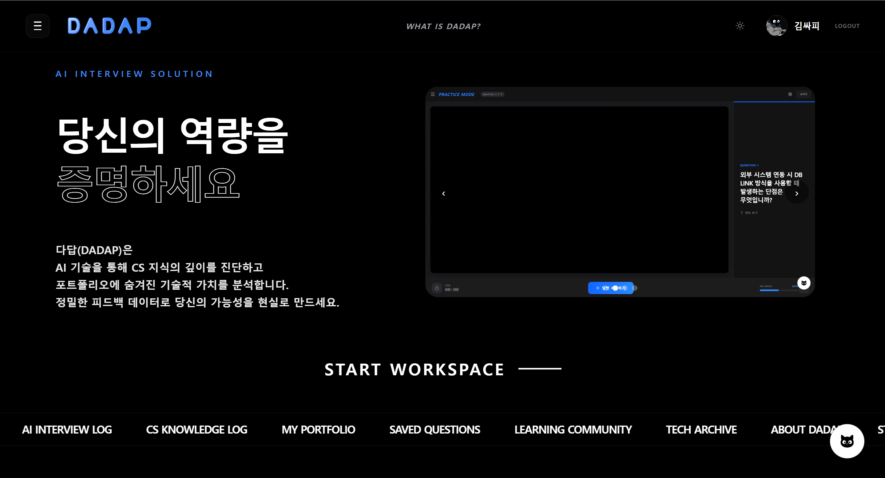
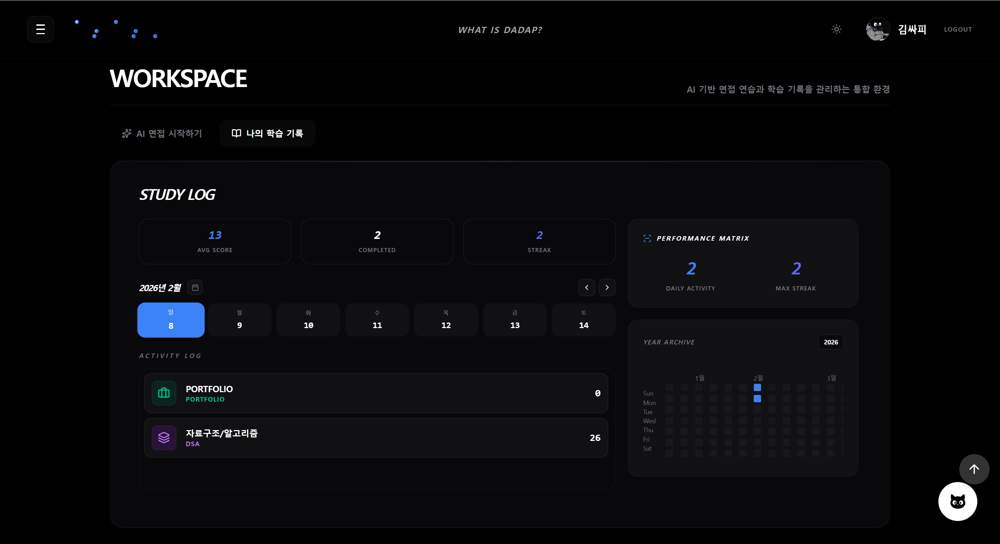
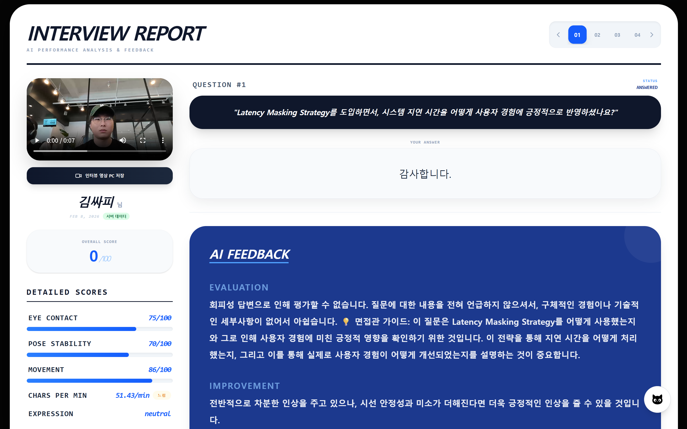
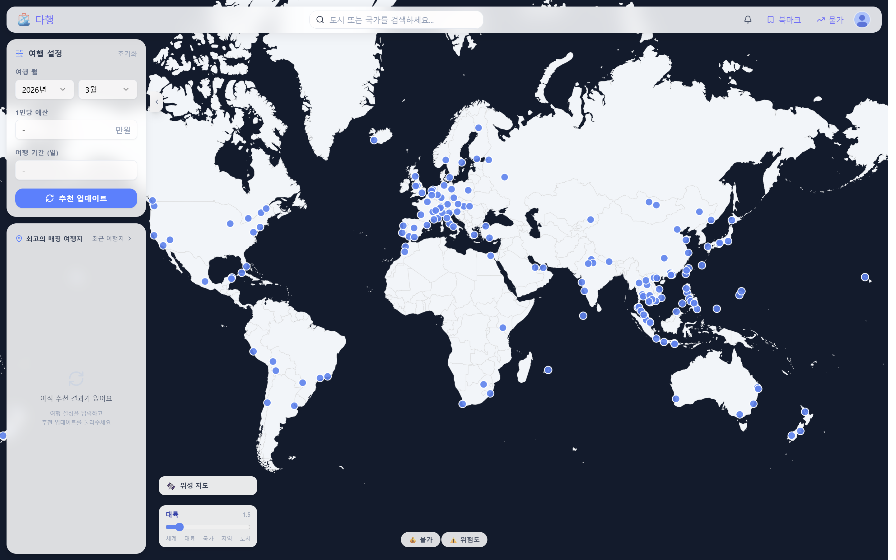
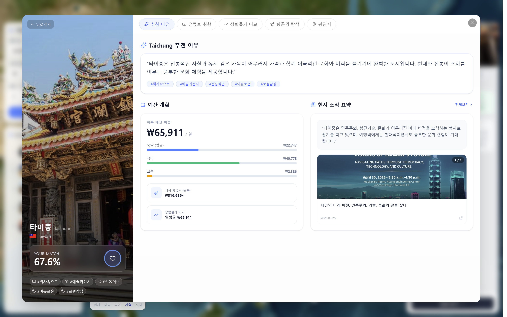
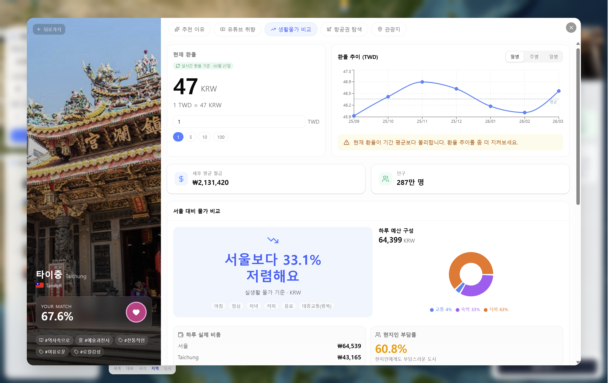
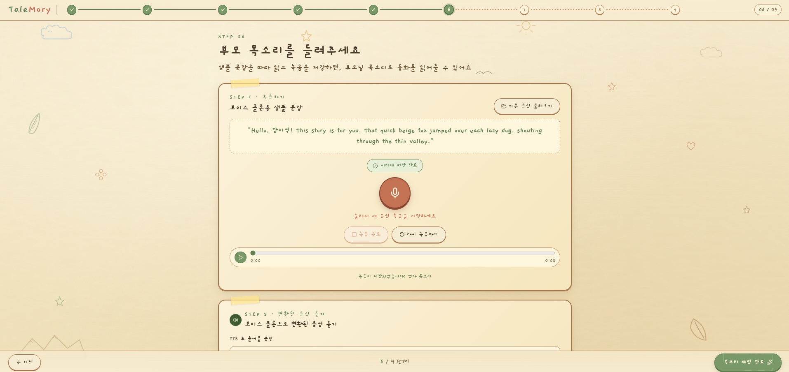
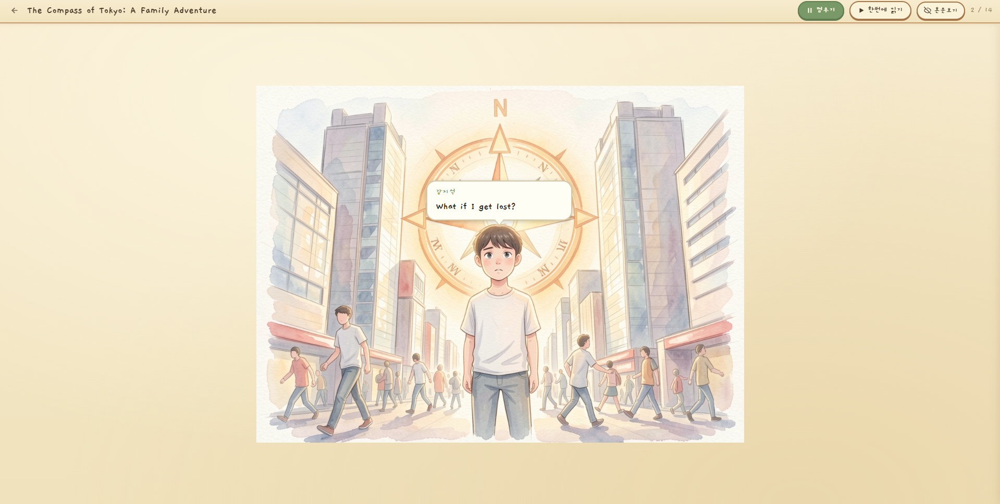

배준석 JunSeok Bae
서비스 흐름을 끝까지 연결하고, 병목을 코드와 구조로 풀어내는 백엔드·AI 개발자입니다.
About Me
백엔드 도메인 로직과 AI 파이프라인을 함께 다루며, 사용자가 만나는 기능이 실제 서비스 흐름 안에서 안정적으로 이어지도록 만드는 데 관심이 있습니다. DADAP에서는 인증, 학습, 스크랩, 스트릭과 같은 사용자 활동 데이터를 API로 연결했고, DAHAENG에서는 도시·추천 API와 점수 산정 로직을 개선했습니다. TaleMory에서는 TTS 생성, RabbitMQ 비동기 처리, S3 저장, Qwen TTS 연동까지 음성 합성 흐름을 중심으로 구현했습니다.
커밋 기록을 보면 새로운 기능을 만드는 일뿐 아니라, 점수 기준 정리, 문서화, 배포 환경 변수 정비, 화면 사용성 수정처럼 서비스가 끝까지 돌아가게 만드는 작업도 꾸준히 맡았습니다. 문제를 빠르게 기능으로 옮기되, 이후 운영과 협업자가 이해할 수 있는 구조로 남기는 개발자가 되고자 합니다.
Skills and Tools
Projects
DADAP - AI 면접 코칭 서비스 2026.01 ~ 2026.02

프로젝트 상세
"면접 연습, AI 피드백, 학습 기록을 한 흐름으로 연결한 주니어 개발자 면접 코칭 서비스"


프로젝트 개요
DADAP은 CS/포트폴리오 면접을 실전처럼 연습하고, 답변과 비언어적 요소를 분석해 피드백을 제공하는 AI 면접 코칭 서비스입니다. 사용자는 면접 모드 선택, 답변 제출, 결과 리포트 확인, 학습 페이지 복습까지 하나의 흐름에서 사용할 수 있습니다.
역할 및 기여
- OAuth 인증 구현: GitHub OAuth와 Google OAuth 로그인 플로우를 구현하고, 백엔드 사용자 도메인과 프론트 리다이렉트 페이지를 연결했습니다.
- 학습 페이지 API 구현: 질문 목록·상세 DTO, 카테고리/키워드 엔티티, repository, service, controller를 구성해 CS 학습 페이지에서 문제를 조회할 수 있게 했습니다.
- 스크랩 기능 구현: 학습 질문 스크랩 엔티티와 repository/service/controller를 추가하고, 한글 데이터 조회 이슈를 보완했습니다.
- 스트릭·학습 로그 개선: 면접 기록 기반 스트릭 API와 일별/카테고리별 평균 응답을 구성하고, 프론트 기여도 그래프와 연동되는 응답 구조를 수정했습니다.
- 배포 산출물 정리: 포팅 매뉴얼, 외부 서비스 문서, 시연 시나리오, dump.sql과 화면 자료를 정리해 재현 가능한 실행 문서를 보강했습니다.
DAHAENG - AI 여행 추천 & 비용 비교 서비스 2026.02 ~ 2026.03

프로젝트 상세
"사용자 취향, 예산, 위험도, 관광지 데이터를 결합해 이유가 보이는 여행지를 추천하는 서비스"


프로젝트 개요
DAHAENG은 Google/YouTube 연동으로 사용자의 관심사를 분석하고, 도시별 물가·항공·관광지·위험도 데이터를 결합해 여행지를 추천하는 서비스입니다. 추천 결과에서 끝나지 않고 상세 탐색, 북마크, 도시 비교까지 이어지는 의사결정 흐름을 제공합니다.
역할 및 기여
- 도시 조회 API 구현: 모든 도시 조회와 추천/비추천 도시 상세 응답 DTO를 구성하고, 위험도·관광지·태그 데이터를 포함하도록 CityService를 확장했습니다.
- 추천 엔진 기반 구현: 추천 요청/응답, 후보 projection, 관광지 추천 repository, 뉴스/장소 enrichment service, 추천 설명 생성 service를 구성했습니다.
- 점수 산정 로직 개선: 태그 점수 비중을 조정하고 위험도·예산·기후 태그를 추천 점수에 반영했으며, API별 점수 불일치 문제를 정리했습니다.
- 성능 최적화: 도시별로 항공권·생활비·위험도·국가 정보를 반복 조회하던 N+1 구조를 제거하고, 도시+국가/항공권/생활비/위험도 데이터를 배치 조회 후 Map으로 조립하도록 바꿨습니다. 80개 도시 기준으로는 항공권 80회, 생활비 80회, 위험도 다수 조회가 발생할 수 있던 구조를 핵심 조회 약 4회로 줄였습니다.
- 병목 계측: 추천 상세 API에 `basicDataMs`, `placesMs`, `newsMs`, `narrationMs`, `totalMs` 타이밍 로그를 추가해, 실측 예시 기준 전체 9.5초 중 뉴스 단계 약 4.9초, 추천 이유 생성 약 2.7초가 병목임을 확인했습니다.
- 사용자 흐름 보완: 최근 본 도시를 확인할 수 있도록 인증 사용자 정보를 city detail API에 연결하고, 북마크가 cityId와 recommendId를 함께 고려하도록 수정했습니다.
TaleMory - AI 영어 동화책 생성 서비스 2026.04 ~ 2026.05
프로젝트 상세
"가족 여행 사진과 목소리를 AI 동화책과 웹툰형 뷰어로 재구성하는 서비스"


프로젝트 개요
TaleMory는 가족 여행 사진과 메타데이터를 바탕으로 영어 동화책, 한국어 번역, 가족 목소리 음성을 생성하는 AI 서비스입니다. 생성 과정은 스토리보드, 그림 스타일, 음성 클로닝, 최종 미리보기, 발행 단계로 이어지며, 사용자는 종이책과 웹툰 뷰어로 결과물을 볼 수 있습니다.
역할 및 기여
- TTS 기본 API와 서비스 구현: FastAPI TTS route, schema, service, 테스트를 구성하고 음성 합성 요청을 처리하는 기본 흐름을 만들었습니다.
- RabbitMQ 비동기 처리 전환: TTS preview와 본문 TTS를 MQ 작업으로 분리하고, `ai.request`/`ai.result` 기반 consumer·publisher·payload 구조를 정리했습니다.
- S3 저장과 결과 응답 연동: 생성된 음성 파일을 S3로 저장하고, 백엔드가 S3 key와 URL을 함께 다룰 수 있도록 TTS result handler와 DTO를 수정했습니다.
- Qwen TTS 모델 전환: Qwen TTS 서버 클라이언트와 별도 FastAPI 서버 코드를 추가하고, 환경 변수와 문서를 정리해 외부 GPU 서버 연동 흐름을 만들었습니다.
- TTS 성능 개선: CosyVoice 합성 병목을 서버 로그로 분석하고 TensorRT plan을 별도 생성해 적용했습니다. 실측 기준 요청당 평균 합성 시간은 약 14.00초에서 6.97초로 약 50% 감소했고, weighted RTF는 2.44에서 1.19로 약 51% 감소했습니다. 34문장 Story TTS 전체 처리도 약 8분 45초 수준에서 4분 04초로 약 2배 빨라졌습니다.
- 웹툰 모드 음성 배정: 웹툰 모드에서 voice assignment를 필수 단계로 연결하고, StoryVoiceAssignment 도메인과 프론트 목소리 녹음 페이지를 함께 수정했습니다.
- FE/BE 품질 보완: 최종 미리보기와 뷰어 화면 CSS, 한글 폰트, 아이 나이 입력 검증, 여행 날짜 선택 UI 등 사용성 이슈를 보완했습니다.